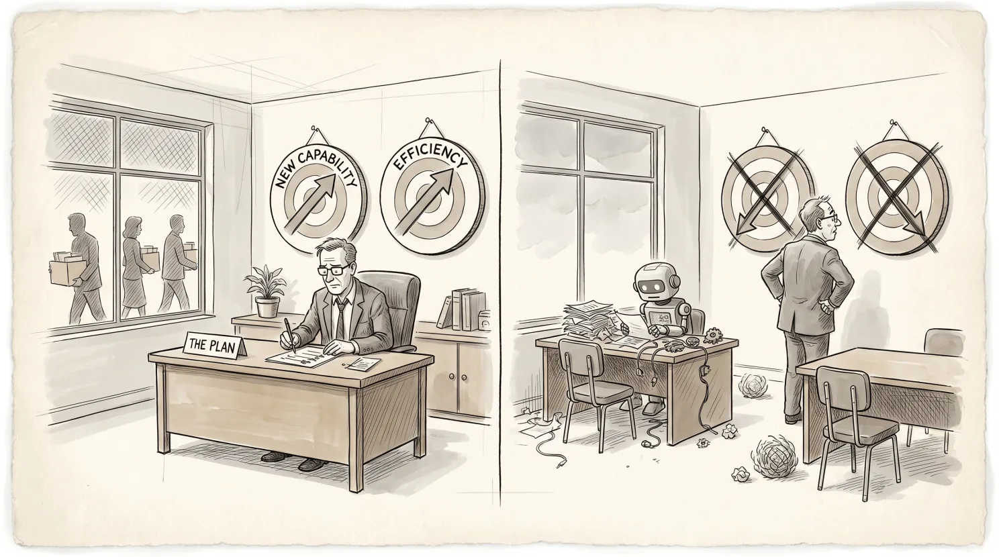

When a new tool absorbs a layer of complexity, the people using it tend to divide. Taylor's stopwatch meant managers no longer had to stand on the floor to know what was happening. Some used that freedom to think harder about production itself: where the real bottlenecks were, what the numbers weren't capturing. Others used it to stop thinking about production at all, managing the measurement instead of what it measured.
Outsourcing, consulting, big data, SaaS: each wave offered the same relief, and each time the same two responses appeared. Some used the distance to engage more complex problems. Others used it to stop engaging with that layer of complexity entirely.
The same tool engages complexity or avoids it, depending on how it is used
A programmer who moves to a higher-level language no longer needs to think about memory registers, as long as they are still thinking hard about the actual problem they are solving. The one who uses the abstraction to stop thinking carefully has taken the other path. The output compiles either way.
AI works the same way. One engineer uses it to generate boilerplate while thinking through the architecture. Another uses it to generate the answer they forward without reading. The tool is identical. Used to handle the routine, it frees attention for the harder problem. Used to avoid the harder problem, the answer arrives without the reasoning and the person accepting it has no way to evaluate it.
How optimizing for stable work left organizations ill-equipped for AI
Each of the efficiency tools named above made something cheaper or easier, and each changed who got promoted.
Once a tool settled into standard practice, the people who rose were often those who were good at working within what it had created, not necessarily those who understood what it was abstracting.
Over time, organizations promoted people who reduced complexity, standardized processes, and managed those processes well.
That works when the technology is stable. Maintenance has defined inputs, known failure modes, measurable outputs. You can run it on repeatable processes, clear metrics, and people who follow established patterns.
Development is different. It requires working without knowing whether you are right yet, revising your understanding of the problem as you go, and producing something that did not exist before. The processes built for maintenance get in the way, not because they are poorly run, but because they are designed to hold things to an established standard. Development is the work of moving away from it.
Many organizations today are trying to do something genuinely new with AI: automate what was manual, build what did not exist, solve problems that prior approaches could not reach. They manage it with the processes they have: structured sprints, vendor scorecards, compliance reviews, which were built for a different kind of work.
The people closest to the actual work can usually tell whether progress is real. The measurement systems cannot: they show execution against a plan, not whether anything genuinely new is being built.
In stable work, a strategy document that looks like every previous one is probably fine. When applied to AI, the same criterion produces a different result.
A maintenance-mode AI strategy identifies use cases, runs pilots, measures cost savings, and reports to the board. A development-mode one asks what the organization needs to learn to do that it cannot do today.
The organizations that will close the complexity gap are the ones that treat developing people as the work, not a byproduct of it

The ability to take on more complex work develops through people working on problems they have not solved before, alongside someone who has solved problems like them. A junior engineer on a genuinely open problem with a senior one is doing more than producing an output. That engineer is building the ability to work through the next one. That is how organizations grow into more complex work: people developing, not tools accumulating.
Replacing a senior engineer with junior engineers who have AI access looks cheaper, and in the short term it often is. But the senior engineer was who the junior engineers learned from. Remove that and the organization gets shallower without it showing on any report.
When AI substitutes for people engaging complexity directly, the organization processes more while developing less.
The reverse carries its own cost. A team of senior engineers with AI loses the fresh eye, the question only someone new to the problem would ask, the approach that experience has not yet ruled out.
Efficiency goes up. The range of what the organization can think to do tends to narrow.
Many organizations tried to use AI for development work first and found it did not deliver. The problem was not the tool. The teams, the processes, and the incentives had been built for maintenance, and AI applied to a maintenance-oriented organization produces maintenance results. Efficiency becomes the fallback: use it to do the same work with fewer people rather than to do different work. The difficulty is that even this requires the organization to develop: to change how people work, integrate new tools into existing processes, build capabilities that do not yet exist.
The organizations that could not use AI to build new capability are unlikely to use it to improve existing operations either. Both require the same thing: people developing, not just tools deployed.